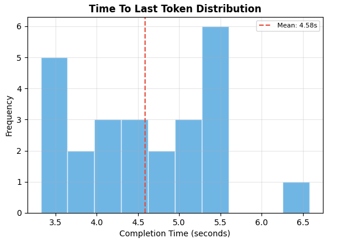
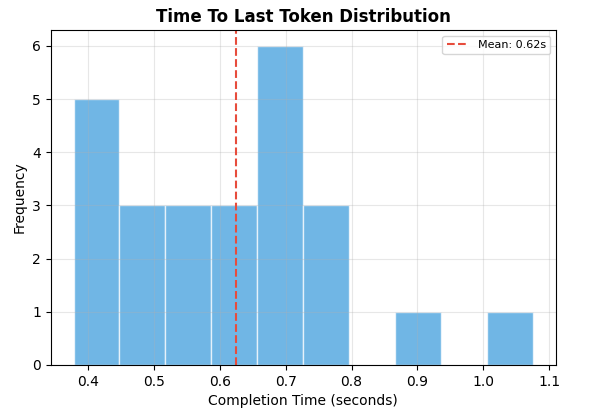
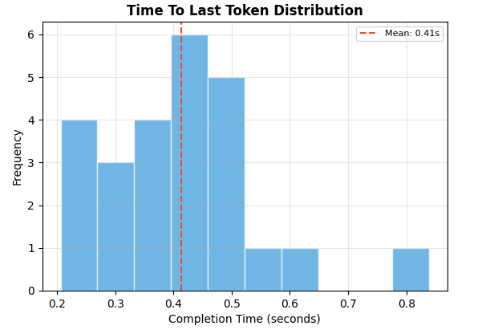
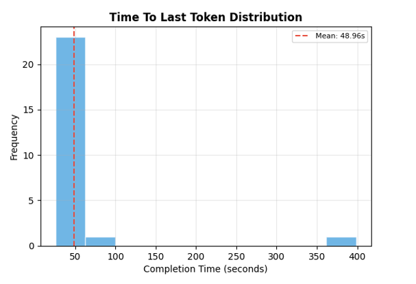
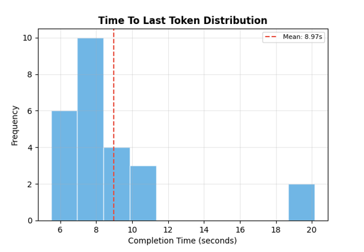
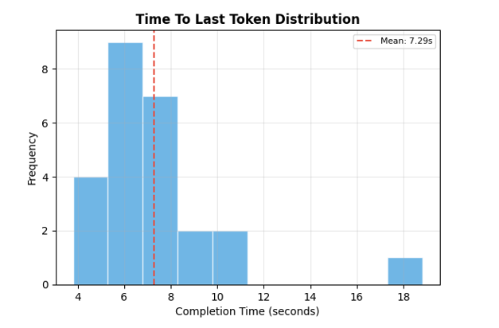

Testing
Template page for testing documentation and results.
Content placeholder.
Compatibility testing was conducted on a range of Windows-based systems using both NVIDIA and AMD GPUs, alongside machines equipped with AMD and Intel CPUs. Theoretically, the application can be run on any devices with a CPU architecture of either AMD64 (AMD CPUs circa 2003+) or ARM64 (Intel CPUs circa 2006+), while compatibility with Qualcomm Snapdragon CPUs have not yet been tested.
The Text-To-Speech and 3D avatar lip-sync models are already deployed using the ONNX Runtime format, but the LLM solution (.llamafile) has limited documentation on NPU support. That being said, the application ran reliably across these configurations when GPU acceleration was available. However, when running on CPU-only systems, particularly during LLM inference, performance degraded significantly as expected, which will be discussed further in the Performance section.
As this is a Windows-based application, compatibility with macOS or other UNIX-based systems was not tested.
The performance was tested on devices with the following system specifications:
- CPU-Only Windows System: AMD Ryzen 5 4600H (Mobile) (6 Cores) + 16GB RAM
- CPU + GPU (Mid-Range with 6GB VRAM) Windows System: Intel i5-9600KF (6 Cores) + NVIDIA RTX 2070 6GB + 32GB RAM
- CPU + GPU (Mid-Range with 12GB VRAM) Windows System: AMD Ryzen 5 5700X (8 Cores) + NVIDIA RTX 4070Ti 12GB + 32GB RAM
We settled for these three control systems as we believe these are realistic representations of what lower-end, mid-range, and high-end devices would look like respectively for our client demographics. The majority of our clients at NAS schools may be able to get access of a shared school device with GPU specifications between the control that we have chosen. We have also included another control device with no GPU to highlight the impracticality of running this application at its current state fully on CPU inferencing.
The benchmark for the Talker and Evaluator agents time-to-last-token (output delay) for the three control systems are displayed below for comparison.
Talker Agent



Evaluator Agent



Below are the summarised values for the performance testing results above.
| System | Average Talker TTLT | Average Evaluation TTLT | Average Response Time |
|---|---|---|---|
| Ryzen 5 4600H (CPU-only) | 4.58s | 48.96s | 53.54s |
| Intel i5-9600KF + NVIDIA RTX 2070 | 0.62s | 8.97s | 9.59s |
| Ryzen 5 5700X + NVIDIA RTX 4070Ti | 0.41s | 7.29s | 7.70s |
The performance results clearly demonstrate that GPU acceleration is essential for practical use of the system. While the Talker agent performs reasonably even on CPU-only hardware (4.58s), the Evaluator agent introduces a significant bottleneck, with nearly 49 seconds of delay, resulting in an overall response time exceeding 53 seconds. This makes the application unsuitable for real-time conversations when running purely on CPU.
In contrast, both GPU equipped systems show a dramatic improvement in performance, reducing total response time to under 10 seconds. Even the mid-range GPU setup (RTX 2070) achieves a nearly 6x speedup, while the higher-end RTX 4070Ti provides further, albeit smaller, gains. This suggests that most of the performance benefit comes from having a GPU at all, with diminishing returns at higher tiers.
It is also important to note that these benchmarks were recorded within a testing framework, meaning real-world application runtimes are approximately 20% faster due to the absence of testing overhead. Additionally, the context size is dynamically adjusted at runtime, particularly for the RTX 2070 with its 6GB of VRAM, allowing the system to maintain comparable performance to the higher-end control by reducing memory usage. This optimisation introduces only minor inaccuracies, but ensures consistent responsiveness across a wider range of hardware.
Content placeholder.